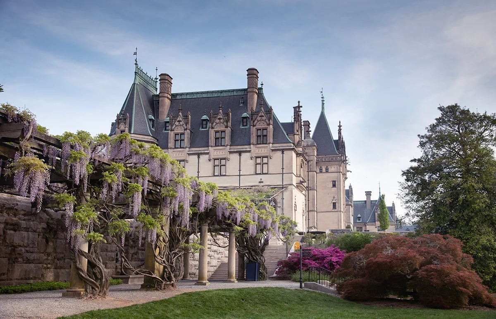
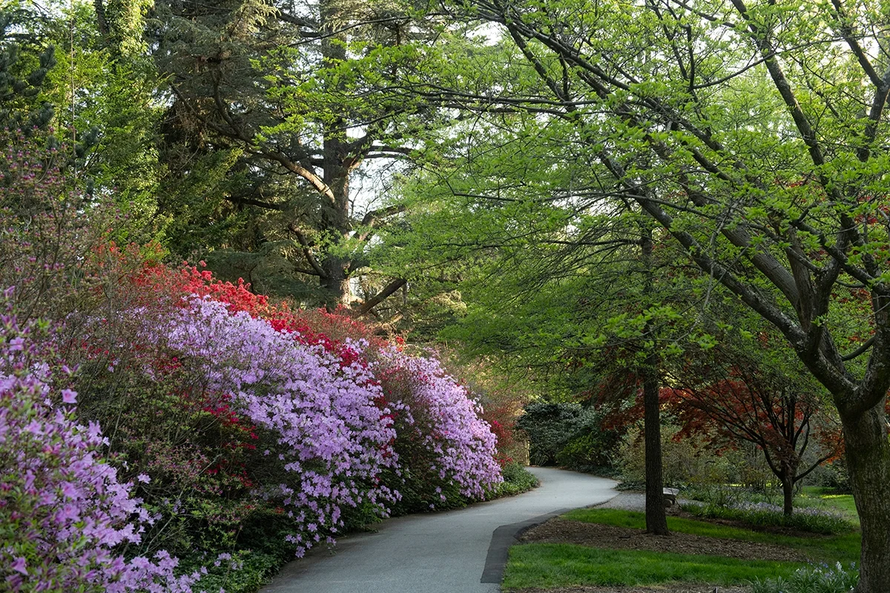
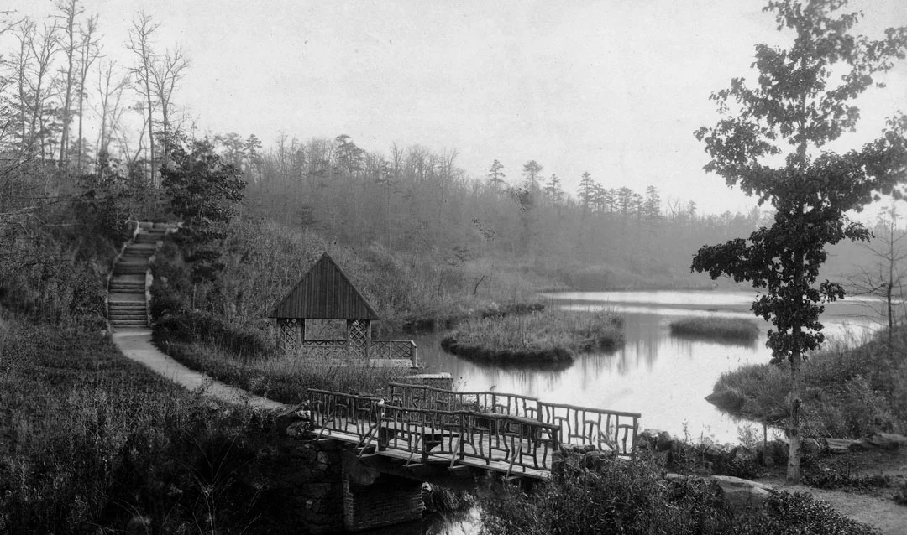
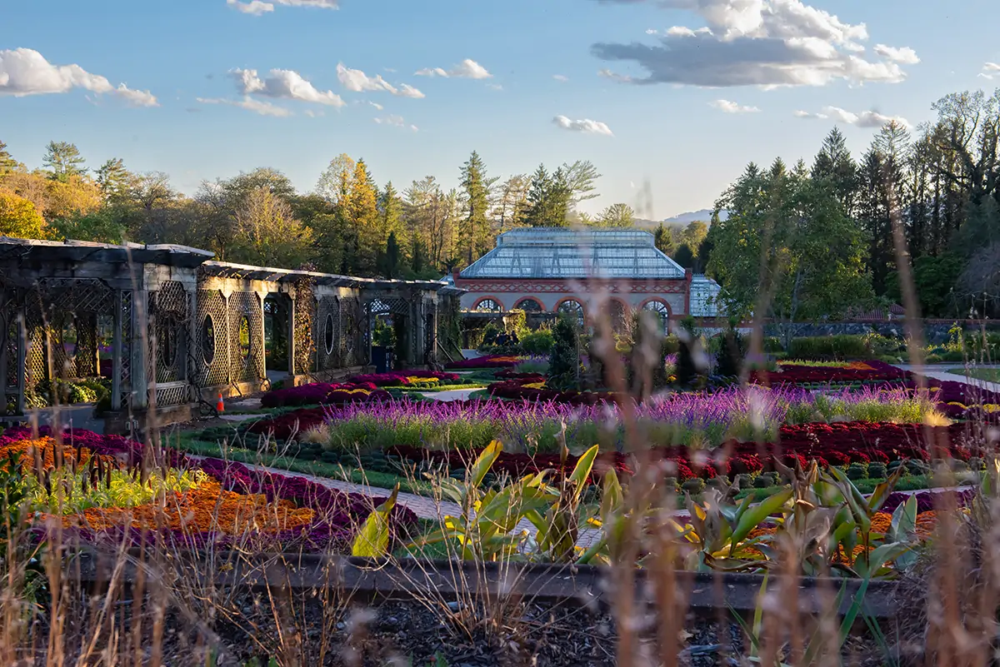
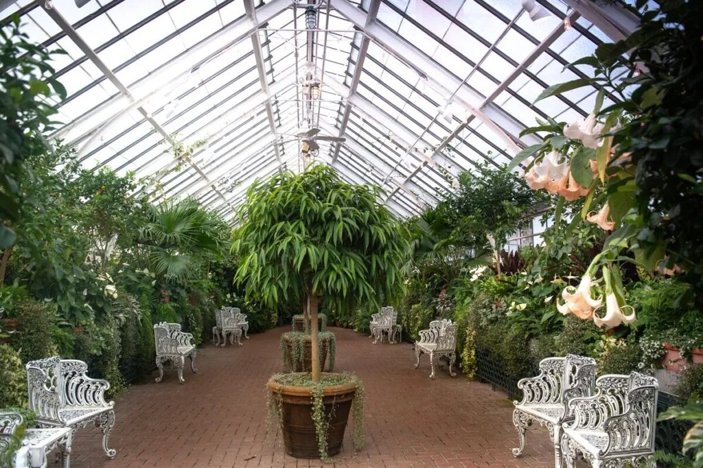
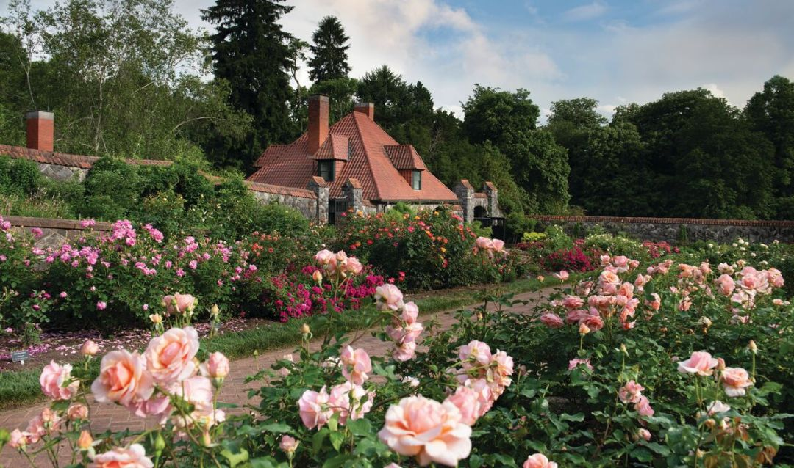
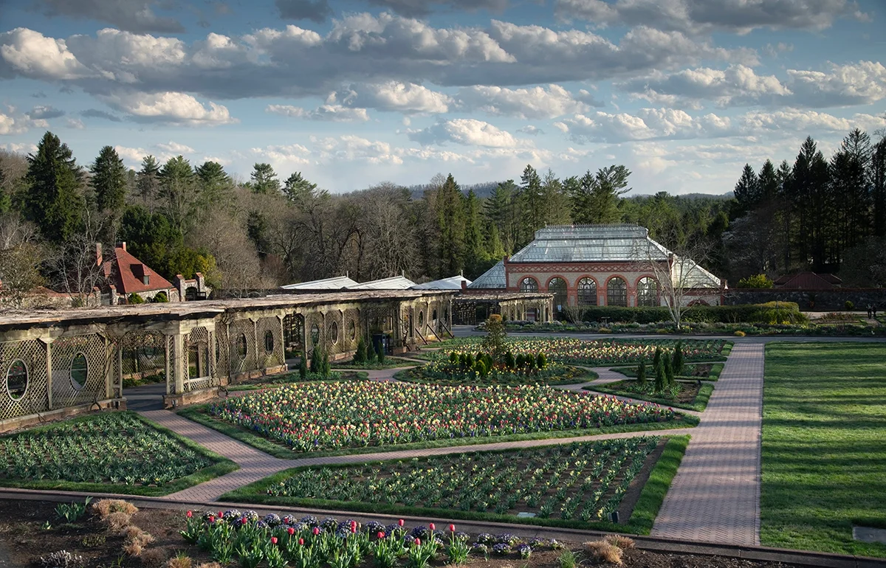

The Garden Design of the Biltmore Estate
The Biltmore Estate is one of North America's most impressive 120,000 acres estates, built in 1889 for George Washington Vanderbilt II. The renowned architected Frederick Law Olmsted created the 75 acres formal garden designs.
Azalea Garden
The Azalea Gardens were curated in 1930 and is home to over 20,000 plants. 15 acres of winding paths traverse through the native Azaleas and Redwoods. With every shade of pink you can imagine. Bass Pond
The six-acre body of water was created over 125 years ago, for boating and enjoying. Butterfly Garden
The flowers and herbs of the Butterfly Garden draw from Olsted's original list of plants used: Alpine Poppy (Papaver alpinum), Black-eyed Susan (Rudbeckia), Blazing Star (Liatris spicata), Creeping Phlox (Phlox subulata) Fountaingrass (Pennisetum), Joe Pye Weed (Eupatorium purpureum), Sage (Salvia), Goldenrod (Solidago), Tickseed (Coreopsis), Wild Indigo (Baptisia australis), Willowleaf Sunflower (Helianthus salicifolius). Conservatory
This year round Tropical Oasis orignated in 1895, embodies the 19th century passion of horticulture. It's glass enclosed building has exotic Orchids, Ferns and Palms, Hibiscus and Bougainvillea, Chrysanthemums, Pointsettas and Amaryllis. Many rooms contain different collections of plants: the Palm House, the Cool House, Hot House, Orchid Room, Sitting Room, Cactus Room, Potting Room. Italian Garden
The Italian Gardens parrallel the plans from 1895. The ponds of the Italian garden host koi fish, exotic water lilies, tropical bananas and papyrus.Rose Garden
Over 120 years of history, the Rose Garden is twice the size since its beginnings. Shrub Garden
Located between the Italian Garden and the Walled Garden, the Shrub Garden spans 10 acres and over 500 plant varieties. The winding paths and lush plants, offering a subtle beauty to contrast's Olmsteds other garden designs.The Spring garden has Forsythia planted with Spirea amid White Pines and Hemlocks.
Styrax Japonicus, Japonese Snowbell, Japonese Maples, Golden Rain Tree, Riber Birch,
Walled Gardens
A Formal garden ayout, with geometric beds, and a variation of colours and textures. There are 250 modern bright blooming flowers: Sunflowers, Asters, Chrysanthemums, Dahlias, Cacading Petunias, Roses, Oramental Grasses, Tulips.